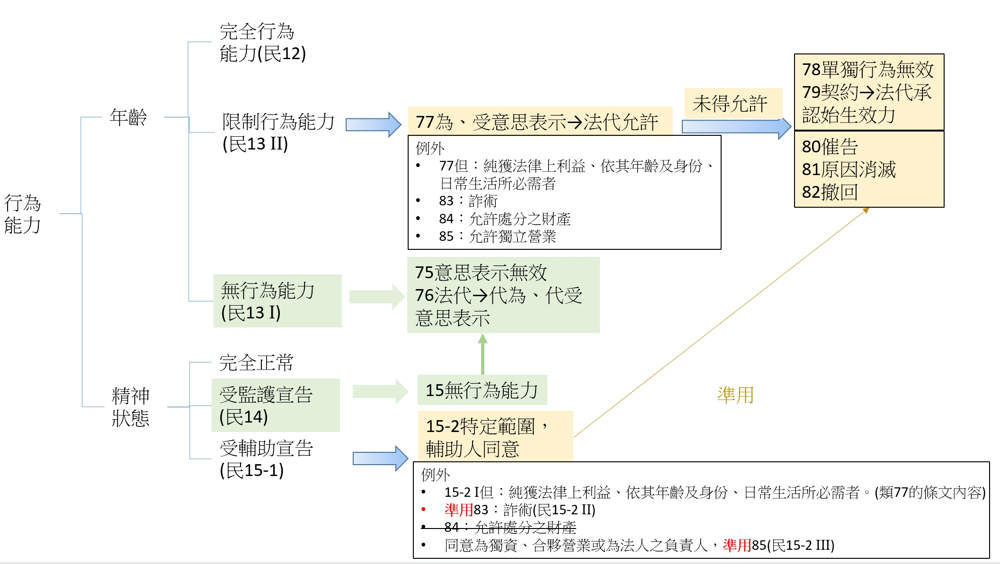

民法第75條至第85條
行為能力之法律效果
無行為能力人・限制行為能力人所為法律行為的效力全貌
1條文原文
第75條（無行為能力人及無意識能力人之意思表示）
無行為能力人之意思表示，無效；雖非無行為能力人，而其意思表示，係在無意識或精神錯亂中所為者亦同。
第76條（法定代理人之代理權）
無行為能力人由法定代理人代為意思表示，並代受意思表示。
第77條（限制行為能力人單獨行為之效力）
限制行為能力人為意思表示及受意思表示，應得法定代理人之允許。但純獲法律上利益，或依其年齡及身分、日常生活所必需者，不在此限。
第78條（限制行為能力人單獨行為之效力）
限制行為能力人未得法定代理人之允許，所為之單獨行為，無效。
第79條（限制行為能力人契約行為之效力）
限制行為能力人未得法定代理人之允許，所訂立之契約，須經法定代理人之承認，始生效力。
第80條（相對人之催告權）
Ⅰ 前條契約相對人，得定一個月以上之期限，催告法定代理人，確答是否承認。
Ⅱ 於前項期限內，法定代理人不為確答者，視為拒絕承認。
第81條（限制原因消滅後之承認）
Ⅰ 限制行為能力人於限制原因消滅後，承認其所訂立之契約者，其承認與法定代理人之承認，有同一效力。
Ⅱ 前條規定，於前項情形準用之。
第82條（相對人之撤回權）
限制行為能力人所訂立之契約，未經承認前，相對人得撤回之。但訂立契約時，知其未得有允許者，不在此限。
第83條（強制有效之行為）
限制行為能力人用詐術使人信其為有行為能力人或已得法定代理人之允許者，其法律行為為有效。
第84條（特定財產處分之允許）
法定代理人允許限制行為能力人處分之財產，限制行為能力人，就該財產有處分之能力。
第85條（獨立營業之允許）
Ⅰ 法定代理人允許限制行為能力人獨立營業者，限制行為能力人，關於其營業，有行為能力。
Ⅱ 限制行為能力人，就其營業有不勝任之情形時，法定代理人得將其允許撤銷或限制之。但不得對抗善意第三人。
前提條文索引：第12、13、14、15、15-1、15-2條（行為能力之等級判定）
行為能力「等級」如何判定，請參見《民法第12、13條－行為能力（年齡篇）》與《民法第14、15、15-1、15-2條－行為能力（精神狀態篇）》； 本講義聚焦於「等級判定之後，各等級所為法律行為的效力如何」這個下游問題。
2條文結構
第75條到第85條可以拆成兩條路徑來理解：一條是「無行為能力人」的路徑，很短，直接無效；另一條是「限制行為能力人」的路徑，比較長，原則要經法定代理人允許或承認，但保留了幾個重要例外。
路徑一・無行為能力人（§75、§76）
路徑二・限制行為能力人（§77～§85）
先看原則與例外的分岔（§77）：
「須得法代允許」這條線，再依行為類型分兩支：
| 行為類型 | 未得允許之效力 | 依據 | 後續機制 |
|---|---|---|---|
| 單獨行為（如債務免除、撤銷權行使） | 無效 | §78 | （無後續機制，直接確定無效） |
| 契約行為 | 效力未定 | §79 | 相對人得催告（§80）／限制原因消滅後本人得自行承認（§81）／承認前相對人得撤回（§82） |
最後是三個「例外自始有效」的情形：

3要件逐項解析
① 第75條──無行為能力人（及無意識、精神錯亂人）之意思表示
要件有二種情形：(1) 無行為能力人（未滿7歲，或受監護宣告之人）所為之意思表示，當然無效；(2) 雖非無行為能力人（即完全行為能力人或限制行為能力人），但意思表示是在「無意識」或「精神錯亂」中所為者，效果同樣是無效。這後段但書的適用門檻很高——依實務見解，「無意識」指全然無識別、判斷能力，「精神錯亂」指精神作用障礙已達喪失自由決定意思之程度，僅僅是意思能力「較常人減退」尚不足以構成。
② 第76條──無行為能力人之代理
因為無行為能力人的意思表示一律無效，若要讓無行為能力人也能參與法律行為，只能透過法定代理人「代為」意思表示（主動表意，例如代為簽約）與「代受」意思表示（被動受意，例如代收要約）兩種方式進行，這與限制行為能力人「自己也可以表意，只是需要允許」的模式完全不同。
③ 第77條──原則允許、例外自主
本文要件：限制行為能力人「為」意思表示（主動）或「受」意思表示（被動），原則上都要事先得到法定代理人的允許。但書設有兩個例外：(1) 純獲法律上利益（只獲得權利、不負擔義務，例如單純受贈與）；(2) 依其年齡及身分、日常生活所必需（例如國中生自己買文具、搭公車）。學說上還發展出第三種類推適用的情形：「無損益之中性行為」（既未獲利益也未受不利益），詳見學說見解章節。
④ 第78條──單獨行為的嚴格效果
「單獨行為」指僅憑一方意思表示即可成立的法律行為，例如債務免除、契約解除、撤銷權之行使。這類行為一旦未經法定代理人允許便當然無效，沒有像契約行為（§79）那樣的效力未定緩衝空間——因為單獨行為一旦生效，往往立即發生權利得喪變更，法律選擇用更嚴格的「直接無效」來保護限制行為能力人。
⑤ 第79條──契約行為的效力未定
與單獨行為不同，契約行為未經法定代理人允許，並非當然無效，而是「效力未定」，須經法定代理人事後承認才生效。這個設計是為了保留契約相對人與限制行為能力人本身「事後把契約救回來」的彈性——契約牽涉雙方，法律沒有必要一律否定其效力。
⑥ 第80條──相對人的催告權
契約效力未定的狀態不能無限期拖著，第80條給契約相對人一個「定一個月以上期限催告法定代理人確答」的權利；法定代理人若在期限內不答覆，法律直接把這個「沉默」解釋為「拒絕承認」（視為拒絕，而不是視為承認）——立法者選擇用「不積極表態即視為否定」來保護限制行為能力人一方，而非讓相對人單方承受不確定的風險。
⑦ 第81條──限制原因消滅後之自行承認
如果限制行為能力人後來滿18歲、或其監護／輔助宣告的原因消滅了，這個人本身就取得完全行為能力，此時他可以自己承認當初訂立的契約，效力等同法定代理人的承認；第80條催告權的規定也準用於這個情形，也就是相對人一樣可以定期催告他本人確答是否承認。
⑧ 第82條──相對人的撤回權
在契約還沒被承認之前，契約相對人本身也可以主動撤回，不必乾等法定代理人表態——這是給善意相對人的一個退場機制。但但書排除了「訂約時就已經知道對方未經允許」的相對人，這種明知情形不值得用撤回權來保護，畢竟他訂約時就承擔了效力未定的風險。
⑨ 第83條──詐術之強制有效
要件：限制行為能力人「用詐術」使相對人誤信其為有行為能力人，或誤信其已得法定代理人之允許。一旦成立，法律行為「強制有效」，不再允許主張無效或效力未定來翻案——立法理由在於：一個能夠設局欺瞞他人的限制行為能力人，顯示其智慮已經足夠，沒有再特別保護的必要，此時交易安全應優先於對限制行為能力人的保護。「詐術」的認定範圍（是否包含消極不說明）存在學說爭議，詳見學說見解章節。
⑩ 第84條──特定財產處分之允許
法定代理人可以概括允許限制行為能力人處分「特定的財產」（例如給孩子一筆零用錢、一台特定用途的電腦），一旦允許，限制行為能力人就這筆財產範圍內有完整的處分能力，不需要每次交易都個別取得允許——這是為了避免瑣碎小額交易也要逐次徵求同意的不便。
⑪ 第85條──獨立營業之允許
法定代理人若允許限制行為能力人獨立經營一項營業（例如允許16歲的孩子經營網路商店），該限制行為能力人「關於該項營業」即有完整行為能力，不再逐筆審查。但若日後發現這個限制行為能力人經營能力不勝任，法定代理人可以撤銷或限制這項允許；不過這個撤銷或限制「不得對抗善意第三人」，也就是已經跟他交易、且不知情的第三人仍受保護。
4學說見解
第83條「詐術」是否限於積極行為？肯定說（施啟揚）vs 通說具名學者
施啟揚教授採「肯定說」，認為第83條之詐術行為以限制行為能力人之積極行為為限，因此相對人詢問時，限制行為能力人僅是支吾其詞或沉默不答，不能因此消極行為構成詐術；通說則採「否定說」，認為詐術行為應從寬解釋，不限於積極欺罔行為，對相對人之誤信不加聲辯、故意引起相對人誤信或加強其誤信等消極行為，同樣屬於詐術。
碩豐法律事務所〈民法第八十三條規定註〉（轉引施啟揚教授見解） 資料來源連結 →
※本段為轉引整理，非直接查證施啟揚教授原著（《民法總則》一書），建議日後有機會取得原書後核對用字。
第77條但書之類推適用──「無損益之中性行為」待驗證來源
學說認為，限制行為能力人為法律行為前須得法定代理人允許的目的，在於保護其避免遭受不利益；若某法律行為對限制行為能力人而言，既未使其取得法律上利益，也未使其負擔法律上不利益（稱為「無損益之中性行為」），此時該行為未得允許，理論上仍不影響限制行為能力人之權益，故學說主張可類推適用第77條但書，使該行為為有效。
法源法律網相關論述整理 資料來源連結 →
限制行為能力人「無權處分」是否屬中性行為？通說vs少數說待驗證來源
通說認為，限制行為能力人雖未因其所為之無權處分獲得利益，但也沒有遭受直接不利益，因為無權處分所涉及者僅是有權利人的財產，與限制行為能力人自身財產無關，故仍屬中性行為，可類推適用第77條但書；少數說則認為，限制行為能力人無權處分他人財產，可能因此對有權利人負不當得利、不法管理甚至侵權行為責任，因此對其而言仍屬不利益，只是此種民事責任並非無權處分行為本身之直接效果，而是間接不利益，故不影響無權處分行為本身作為中性行為之性質——換言之，即使採少數說之risk觀察角度，多數論者仍認定結論上屬中性行為。
三民輔考〈民法之行為能力〉知識百科整理 資料來源連結 →
5實務見解
「限制行為能力人，未得法定代理人之允許，所訂立之契約，並非無效之行為，亦非得撤銷之行為，而係效力未定之行為。限制行為能力人於行為後，不得主張其訂立之契約為無效，或表示撤銷而使其歸於無效。」
教學重點：這則判例直接點出第79條「效力未定」跟「無效」「得撤銷」的差異——效力未定不是無效（還有機會被承認而生效），也不是得撤銷（不需要、也不能由限制行為能力人自己一句「我要撤銷」就使其歸於無效）。特別重要的是最後一句：連限制行為能力人「自己」都不能主張契約無效，這是為了避免限制行為能力人一方面主張契約有利就想留著，不利就主張無效，形成單方任意翻案的不公平局面。
裁判字號：最高法院49年台上字第1041號判例 資料來源連結（轉引） →
依票據法規定，簽發本票在性質上屬於單獨行為（發票人簽名後，即單方作出無條件支付一定金額之意思表示，不以相對人同意為要件）。依實務見解，限制行為能力人未經法定代理人允許所簽發之本票，依第78條規定，屬單獨行為，應為無效，而非第79條之效力未定；但票據法第8條規定，票據上雖有限制行為能力人之簽名，不影響其他共同簽名人簽名之效力，故若有其他完全行為能力人共同簽名，該部分票據效力仍不受影響。
教學重點：這是第78條「單獨行為無效」在票據法領域的具體展現，可與前面「契約行為適用第79條效力未定」做對照，凸顯法律行為性質（單獨行為 vs 契約行為）決定了適用第78條還是第79條這個關鍵區辨。
整理自法律實務文章（債務金融消費爭議律師網） 資料來源連結 →
6教學案例
以下案例為 AI 虛構，僅供教學使用，非真實案件。
事實
14歲的小翔之前借給同學阿哲2,000元，某天阿哲說手頭很緊，小翔一時心軟，當場口頭表示「這筆錢不用還我了」，未經父母同意。事後小翔的父母得知，認為這筆錢不該就這樣算了。
爭點
小翔免除阿哲債務的意思表示，效力如何？
分析
小翔為限制行為能力人（滿7歲以上未滿18歲），「免除債務」是單獨行為（僅憑債權人一方意思表示即生效，不需要債務人同意）。這個行為對小翔而言並非「純獲法律上利益」（他放棄了債權，屬於處分自己權利的不利益行為），也不是日常生活所需。依第77條本文，原則上須得法定代理人允許；未得允許時，依第78條規定，單獨行為「無效」，不像契約行為那樣還有效力未定、事後承認的空間。
結論
小翔免除阿哲債務的意思表示無效，這筆2,000元的債權依然存在，阿哲仍負清償義務。
事實
16歲的小雨未經父母同意，自行向網友小李購買一台二手筆電，價金8,000元，雙方已簽立簡單的買賣契約並約定一週後交貨付款。三天後，小李有點擔心，寄信給小雨的父母，定一個月期限催告確答是否承認這筆買賣。父母收到信後遲遲沒有回覆。
爭點
(1) 這筆買賣契約在父母表態前的效力如何？(2) 父母逾期未答覆，法律效果為何？(3) 若父母遲遲不回覆，小李還有什麼退場方式？
分析
買賣契約屬於契約行為，非日常生活所需（8,000元對16歲學生而言金額不小），依第79條規定，未得法定代理人允許前，契約效力未定。小李依第80條第1項行使催告權，定一個月以上期限催告，於期限內小雨父母未確答，依第80條第2項規定，視為拒絕承認。在父母明確表態或視為拒絕承認之前，小李原本也可以依第82條主張撤回，但既然小李已經選擇用催告的方式處理，且撤回權在法定代理人「承認前」都能行使，兩種機制其實可以並存，端視小李策略選擇。
結論
一個月期滿父母仍未答覆，依第80條第2項視為拒絕承認，買賣契約確定不生效力，小雨應返還筆電（如已交付），小李返還已收價金（如已收受）。
事實
17歲的阿凱想買一台二手機車，機車行老闆詢問是否成年，阿凱謊稱自己已經18歲，並出示一張自己修改出生年份的偽造身分證影本。老闆信以為真，完成買賣並過戶交車。事後老闆發現阿凱的真實年齡，主張契約無效並要求返還機車。
爭點
阿凱出示偽造證件的行為，是否構成第83條之「詐術」？契約效力如何？
分析
阿凱為限制行為能力人，買機車並非純獲利益或日常生活所需，原則上須得法定代理人允許，依第79條屬效力未定。但阿凱主動出示偽造身分證件，屬於積極的欺罔行為，不論採學說見解中的肯定說或通說，都會被認定構成第83條之「詐術」——使機車行老闆誤信阿凱為有行為能力人。依第83條規定，此時法律行為「強制有效」，不再適用第79條效力未定的保護機制。
結論
阿凱與機車行間的買賣契約有效，機車行老闆得請求阿凱支付價金，阿凱不能以自己未成年為由主張契約無效或效力未定。
7申論練習題與模擬解答
本節僅先建立標題佔位，題目與模擬解答待日後補充。
待補充8速查卡
民法第75～85條・行為能力法律效果
| 情境 | 效力 | 依據 |
|---|---|---|
| 無行為能力人之意思表示 | 無效 | §75、§76 |
| 限制行為能力人：純獲利益／日常所需 | 有效 | §77但書 |
| 限制行為能力人：單獨行為未得允許 | 無效 | §78 |
| 限制行為能力人：契約未得允許 | 效力未定 | §79 |
| 限制行為能力人：用詐術致相對人誤信 | 強制有效 | §83 |
| 限制行為能力人：特定財產／獨立營業經允許 | 該範圍內有效 | §84、§85 |
口訣意涵：限制行為能力人未經允許的單獨行為當然無效（§78）；未經允許的契約行為效力未定、留有承認空間（§79）；一旦用詐術欺瞞相對人，法律行為強制有效不容翻案（§83）；經法定代理人事先允許特定財產處分或獨立營業者，在該範圍內有效（§84、§85）。